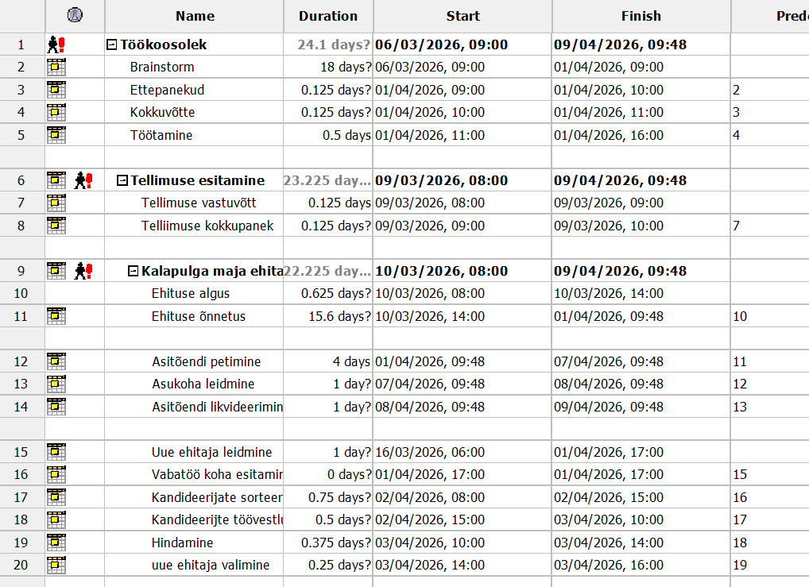
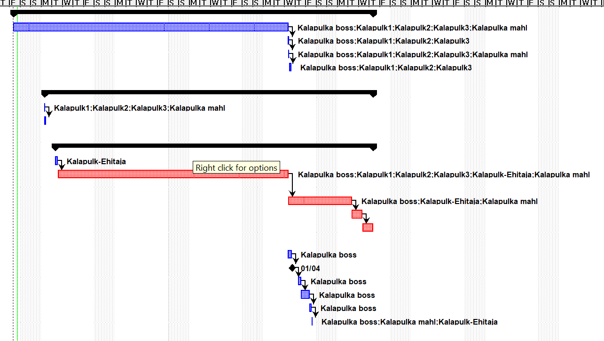
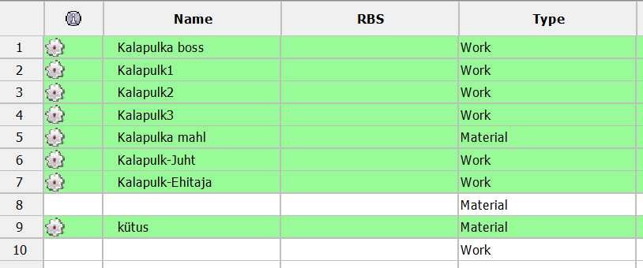
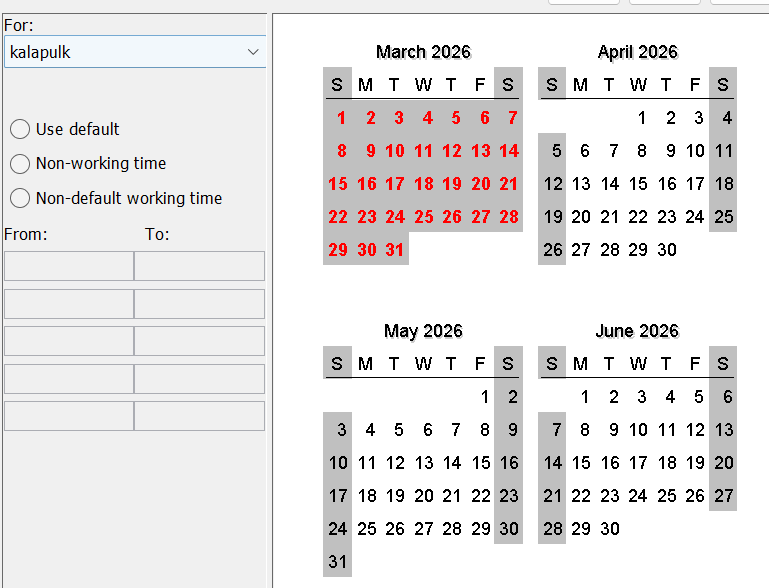
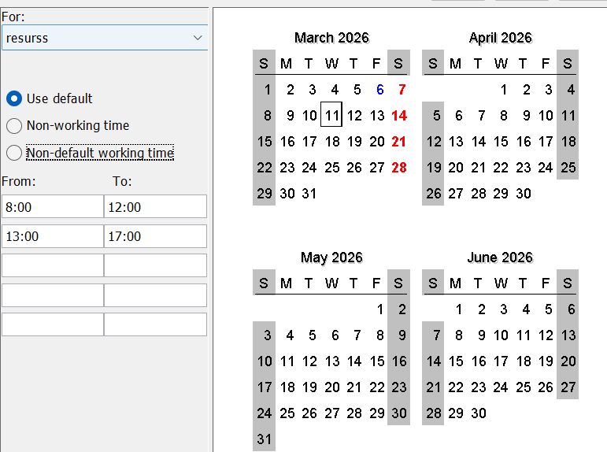

ProjectLibre on äpp kus sa saad organiseerida ajavahemiku mis on
Töögraafikuks mõeldud või muu graafikuks, see projekt
mis ma tegin on näide mida ma proovisin teha
Selle töögraafiku lugu on , see et kalapulgad alustasid koosoleku millist maja
teha oma tuleviku plaanile, see plaan läks teose ja hakkati tellima asju selle jaoks
Asjad olid kohal ja ehitamine hakkas pihta kuni tekkis tööõnnetus mis oli
traagiline ja selleks, et väldita halba mainet firmale
Kalapulga boss andis käsu peida asitõendi ja leida uus ehitaja
Kõige all on raporti lingid




